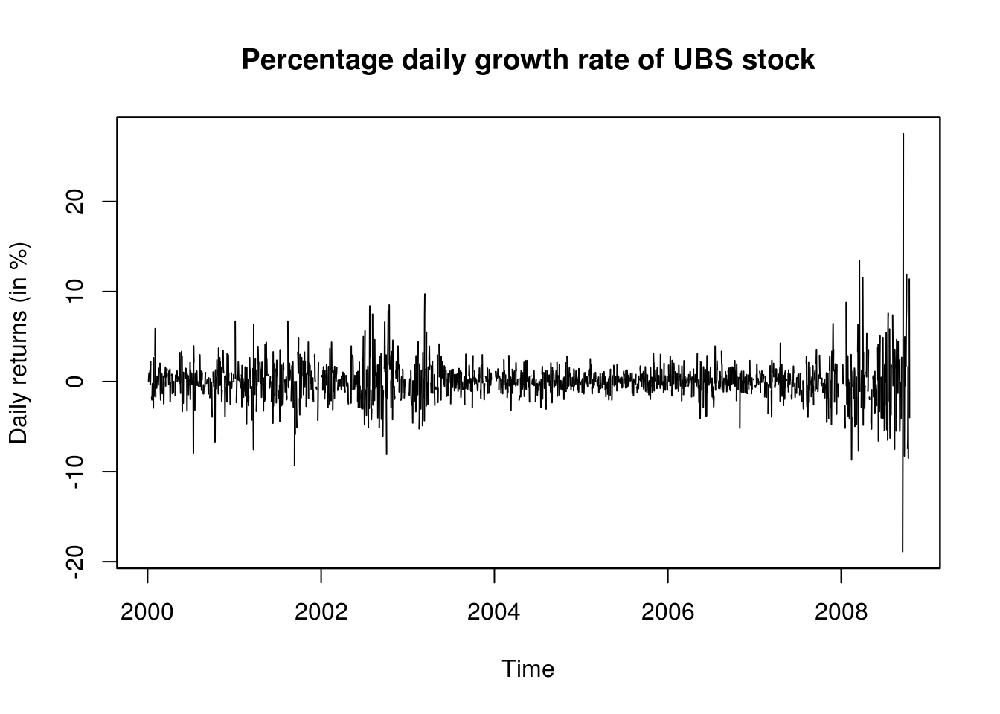
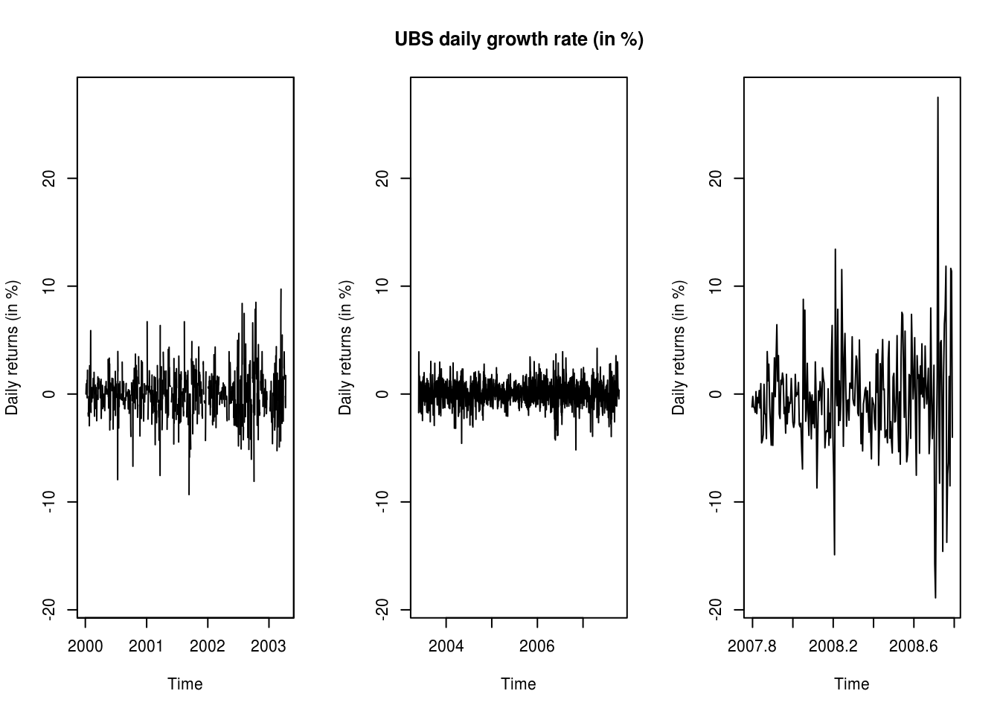
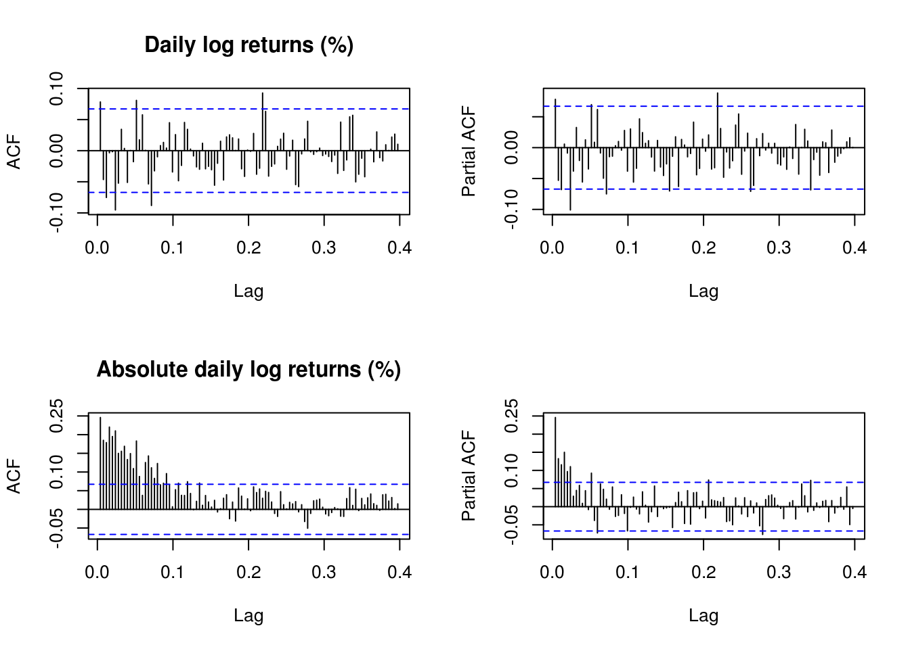
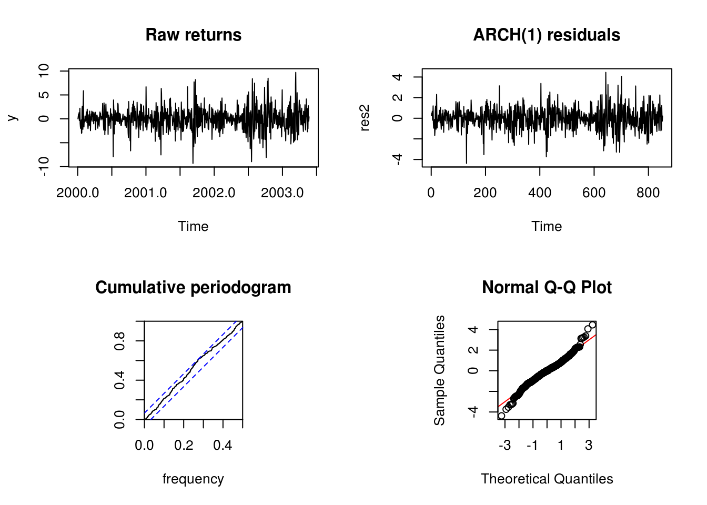

2.1 Manual maximum likelihood estimation
As was done in class for the beaver dataset, we will look at manual specification of the likelihood. While it is straightforward in principle to maximize the latter for ARMA models, the numerous restrictions that are imposed on the parameters make it hard, if not impossible, to manually code one’s own function. Maximum likelihood estimation is implemented typically via the state-space representation, which we will cover later in the semester.
For simple models, it is easily done however, and should shed some light on the various functions that are part of R for optimization, the definition of a function, the use of nlm and optim for optimization purposes, etc.
We first load a dataset of UBS and Credit Suisse stock prices from 2000 until 2008. The data is splitted in three parts for the analysis, since the data is heteroscedastic, and there appears (visually) to be two changepoints. We look at the adequacy of fitted AR(1) model for the mean and an ARCH(1) for the variance.
# devtools::install_github('nickpoison/astsa')
# devtools::install_github('joshuaulrich/xts')
library(xts)
library(lubridate)
# read data and examine it
UBSCreditSuisse <- read.csv("http://sma.epfl.ch/~lbelzile/math342/UBSCSG.csv",
stringsAsFactors = FALSE)
names(UBSCreditSuisse) [1] "Date" "UBS_OPEN" "UBS_HIGH" "UBS_LOW" "UBS_LAST"
[6] "UBS_VOLUME" "CSG_OPEN" "CSG_HIGH" "CSG_LOW" "CSG_LAST"
[11] "CSG_VOLUME"head(UBSCreditSuisse) Date UBS_OPEN UBS_HIGH UBS_LOW UBS_LAST UBS_VOLUME CSG_OPEN CSG_HIGH
1 1/1/00 NA NA NA NA NA NA NA
2 1/2/00 NA NA NA NA NA NA NA
3 1/3/00 NA NA NA NA NA NA NA
4 1/4/00 31.13 31.17 30.32 30.32 11526322 72.01 72.13
5 1/5/00 30.06 31.06 29.73 30.32 17142124 67.51 69.01
6 1/6/00 30.29 30.80 30.25 30.47 9509228 68.09 68.55
CSG_LOW CSG_LAST CSG_VOLUME
1 NA NA NA
2 NA NA NA
3 NA NA NA
4 69.13 69.24 5336924
5 67.40 68.44 4419160
6 67.74 68.55 2585800# create time series, accounting for missing values at weekends and 251.25
# values/year this is correct for analysis, but only provides approximate
# locations for plotting
UBS <- ts(UBSCreditSuisse$UBS_LAST, start = c(2000, 1), frequency = 365.25)
UBS <- ts(UBS[!is.na(UBS)], start = c(2000, 1), frequency = 251.625)
# Irregular time series
UBS_xts <- with(UBSCreditSuisse, xts(UBS_LAST, mdy(Date)))Objects of class ts store the dates from the vector start with observations as \((i-1)/\omega\). Thus, we specified in the above a vector encoded as 2000, 2000+1/365.25, This means that missing values are not handled. In contrast, xts objects keep the time stamps from a Date object. The function with is equivalent to attach, but has a limited scope and is used to avoid writing UBSCreditSuisse$Date, etc. The function mdy transforms the string Date as month, day and year. The string is coerced into an object of class Date.
# Analysis for UBS returns, 2000-2008
UBS_ret <- 100 * diff(log(UBS_xts))
plot.zoo(UBS_ret, xlab = "Time", ylab = (ylab <- "Daily returns (in %)"), main = "Percentage daily growth rate of UBS stock")
# compute log returns
UBS.ret <- 100 * diff(log(UBS))
# split into 3 homogeneous(?) parts, and plot using the same vertical axis
# on the graphs
# with the xts object
par(mfrow = c(1, 3))
lims <- range(UBS.ret)
plot.zoo(UBS_ret[paste0(index(first(UBS_ret)), "/", as.Date("2003-01-01") +
100)], ylim = lims, xlab = "Time", ylab = ylab)
# with window and the ts object
y1 <- window(UBS.ret, end = c(2003, 100))
# plot(y1, ylim = lims)
y2 <- window(UBS.ret, start = c(2003, 101), end = c(2007, 200))
plot(y2, ylim = lims, ylab = ylab, main = "UBS daily growth rate (in %)")
y3 <- window(UBS.ret, start = c(2007, 201))
plot(y3, ylim = lims, ylab = ylab)
# analysis of first part, first just plotting ACF and PACF for data and for
# abs(data)
y <- y1
# (Partial) correlograms for the series
par(mfrow = c(2, 2))
TSA::acf(y, lag.max = 100, main = "Daily log returns (%)")
pacf(y, lag.max = 100, , main = "")
TSA::acf(abs(y), lag.max = 100, main = "Absolute daily log returns (%)")
pacf(abs(y), lag.max = 100, main = "")
The residuals look pretty much white noise, but the variance has residual structure. Recall the implicit definition of the AR(1) process \(Y_t\), \[Y_t=\mu+\phi(Y_{t-1}-\mu)+\varepsilon_t,\] where \(\varepsilon_t \stackrel{\mathrm{iid}}{\sim} \mathcal{N}(0,\sigma^2)\). The joint distribution of the observations conditional on the first is multivariate normal. Here is a simple function for the likelihood, which only requires specifying the conditional mean.
# analysis using AR(1) model for means conditional likelihood
nll_AR1 <- function(th, y) {
n <- length(y)
condit.mean <- th[1] + th[3] * (y[-n] - th[1])
-sum(dnorm(y[-1], mean = condit.mean, sd = th[2], log = TRUE))
}
init1 <- c(0, 1, 0.5)
# fit1 <- nlm(f = nll_AR1, p = init1, iterlim = 500, hessian = TRUE, y = y)
fit1 <- optim(init1, nll_AR1, y = y, hessian = TRUE, method = "Nelder-Mead")We obtain the parameter estimates and the standard errors from the observed information matrix, estimated numerically. Incidently, one can easily that the problem is equivalent to a linear Gaussian model where the regressor is a lagged vector of observations. The parameter estimates differ slightly, but this is due to the optimization routine.
#Parameter values (MLEs)
fit1$par
#Standard errors from inverse of Hessian matrix at MLE
#If you code the optimization routine yourself, you can still obtain the Hessian via
#hessian <- numDeriv::hessian(func = nll_AR1, y = y, x = fit1$par)
#Standard errors
sqrt(diag(solve(fit1$hessian)))
#Conditional likelihood using lm
#dynlm is a wrapper around lm for `ts` and `zoo` objects, L means lag and you can add e.g. trend(y)
fit1_ols <- dynlm::dynlm(y ~ L(y, 1))
coefficients(fit1_ols)
sd(residuals(fit1_ols))Incidently, the situation is analogous for the ARCH(1) process, which has a conditional variance that changes over time. The latter is defined implicitly as \[\begin{align*} Z_t &= \mu + \sigma_t\epsilon_t\\ \sigma_t^2 &=\alpha_0+\alpha_1(Z_{t-1}-\mu)^2 \end{align*}\] with \(\epsilon_t \stackrel{\mathrm{iid}}{\sim} \mathcal{N}(0, 1)\).
The variance \(\sigma^2\) here is included as \(\sigma^2=\alpha_0\) and the parameter appearing in the likelihood is \(\alpha_1/\sigma^2\) corresponds to \(\theta_3\), or th[3].
# analysis using ARCH(1) model for variances
nll_ARCH1 <- function(th, y) {
n <- length(y)
condit.mean <- th[1]
condit.var <- th[2] * (1 + th[3] * (y[-n] - th[1])^2)
-sum(dnorm(y[-1], mean = condit.mean, sd = sqrt(condit.var), log = TRUE))
}
init2 <- c(0, 1, 0.5)
fit2 <- nlm(f = nll_ARCH1, p = init2, iterlim = 500, hessian = TRUE, y = y)
## fit2 <- optim(init2, nll_ARCH1, y = y, hessian = TRUE)The function nlm performs minimization, but may return warnings because some of its steps because the conditional variance can be negative for some combinations of the variable, so the corresponding moves of the Newton algorithm are rejected. These are typically steps that are not in the neighborhood of the final solution, so can be ignored if the output is valid. The minimum corresponds to the negative log-likelihood at the maximum likelihood estimates. The MLE is given by estimate and the standard errors by the square root of the diagonal entries of the inverse Hessian (here already negated because we work with the negative of the log-likelihood). Since the residuals have a varying variance, we need to adjust them by dividing each by their respective variance. Same would have occured for the AR(1) process, but it is easier for the mean.
fit2$minimum[1] 1860.386fit2$estimate[1] 0.02691498 3.31180313 0.11770094sqrt(diag(solve(fit2$hessian)))[1] 0.06843004 0.24664944 0.02908274make_resid_ARCH1 <- function(y, fit) {
th <- fit$estimate
n <- length(y)
condit.mean <- th[1]
condit.var <- th[2] * (1 + th[3] * (y[-n] - th[1])^2)
res <- (y[-1] - condit.mean)/sqrt(condit.var)
ts(res)
}
res2 <- make_resid_ARCH1(y, fit2)We now proceed with diagnostic plots to check the model adequacy. Recall that the Kolmogorov–Smirnov test statistic associated with the cumulative periodogram tests the hypothesis of white noise (and ARCH(1) is white noise).
par(mfrow = c(2, 2))
plot(y, main = "Raw returns")
plot(res2, main = "ARCH(1) residuals")
cpgram(res2, main = "Cumulative periodogram")
par(pty = "s")
qqnorm(res2, panel.first = {
abline(0, 1, col = "red")
})
2.1.1 Exercise 1: UBS stock returns
- Create a function that fits an AR(1)-ARCH(1) model by modifying the code provided above and apply it to
y. The latter is defined as \[Y_t-\mu = \phi(Y_{t-1}-\mu)+\sigma_t\varepsilon_t, \quad \sigma^2_t = \alpha_0+\alpha_1(Y_{t-1}-\mu)^2, \quad \varepsilon_t \stackrel{\mathrm{iid}}{\sim} \mathcal{N}(0,\sigma^2)\] - Obtain the maximum likelihood estimates using
nlmoroptimas well as the standard errors - Plot the residuals. Comment on the fit using standard diagnostic plots (Q-Q plot, ((P)ACF, cumulative periodogram).
- Fit an AR(2) model using a conditional likelihood for the mean and obtain the standard errors of your estimated coefficients.
- Perform a likelihood ratio test to test whether the AR(2) coefficient is significative.